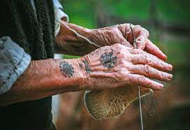

U Rami je bio
prilično raširen običaj tetoviranja, posebno kod
žena. Ovaj predslavenski običaj u našim krajevima
prihvaćen je i ovdje, ali je on dobio izrazito
kršćansku crtu.
Glavna tema tetoviranja bio je križ u
raznim oblicima i veličinama. Dok je u Bosni bilo
rijetko tetoviranje kod muslimana a nešto češće
kod pravoslavaca, kod katolika je ono bilo vrlo
često a nazivalo se bocanje križa ili u
Rami sicanje.
Prema konstatacijama Ć. Truhelke tetoviranje je
pretkršćanski običaj, a izlazi da su ga se
katolici najviše držali. Možda im je to služilo
kao neki zaštitni znak od prijelaza na muslimansku
vjeru i čuvanje svoga identiteta, posebno kad se
radi o djevojkama koje su mogle biti izložene
dragovoljnom ili nasilnom prijelazu na islam.

Tradicionalne Ramske tetovaže
Kupreški običaj košnje trave
Običaj natjecanja u ručnom košenju trave na
Kupresu održava se svake godine u prvoj nedjelji
mjeseca srpnja na polju Strljanica smještenom na
Kupreškoj visoravni. Tradicija održavanja ovog
događaja, prema dostupnim pisanim tragovima,
zabilježena je već prvih decenija 20. stoljeća.
Riječ je o najvažnijem društvenom događaju šireg
kupreškog kraja u kojem sudjeluju najbolji kosci,
domaćini i gosti iz drugih krajeva. Natjecanje se
održava po strogim pravilima i jasno utvrđenim
kriterijima, a sve prate brojni posjetitelji,
bodreći i navijajući.
Kupreško polje je područje sa razvijenom
stočarskom tradicijom za koju je usko vezana i
kosidba, tj. prikupljanje trave-sijena u srpnju za
zimsku ishranu stoke. Kosidba trave u narodnoj
tradiciji predstavlja vještinu i znanje koju
mladići i mlađi oženjeni muškarci sa ponosom
manifestiraju u ljetnom periodu prilikom
zajedničke kosidbe – mobe. Za dostizanje najboljih
rezultata u natjecanju kosci koriste ručno
iskovane kose koje se danas izrađuju u rijetkim
kovačkim radnjama. Samo tako iskovane kose
odgovaraju zahtjevnoj oštroj planinskoj travi
Kupreške visoravni.
Najbolji kosac dobija titulu kozbaše koju s
ponosom nosi do narednog natjecanja, a koja mu
donosi čast i ugled u društvu.
Običaj natjecanja u košenju trave na Kupresu
upisan je na UNESCO Reprezentativnu listu
nematerijalne kulturne baštine čovječanstva 2020.
godine.